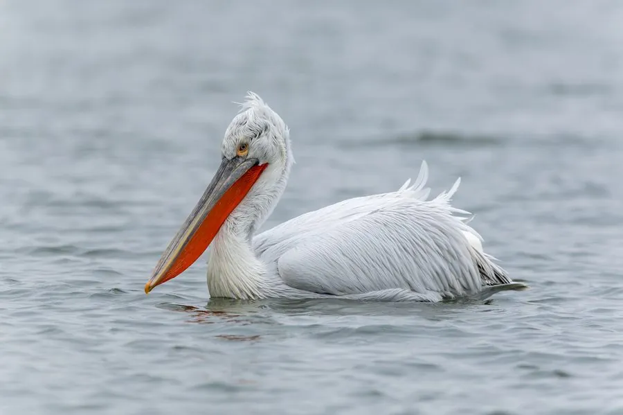

鸟类 · 动物界
卷羽鹈鹕 Pelecanus crispus

体形最大的淡水鹈鹕，喙下挂着橙色大喉囊，颈后羽毛卷曲如假发，在中国属国家一级保护的罕见旅鸟。
- 分类
- 门脊索动物门纲鸟纲目鹈形目科鹈鹕科属鹈鹕属
- 栖息环境
- 大型湖泊、河口、沼泽与沿海潟湖，繁殖期在芦苇丛生的湿地集群营巢
- 地理分布
- 繁殖于东南欧、中亚和蒙古，越冬于南亚与东亚，中国有零星记录
- 保护级别
- IUCN 近危（NT）；中国国家一级保护动物
物种志
卷羽鹈鹕体长 160–183 cm，体重 10–13 kg，翼展 310–345 cm，是体形最大的飞禽之一。全身羽毛灰白色，颈后有一撮卷曲的羽毛，像蓬松的假发，因此得名；喙长而扁平，喉囊呈橙黄色，繁殖期喉囊和喙会变成鲜艳的橙红色，眼周皮肤粉红。飞行时头缩在背上，双翼宽大。
卷羽鹈鹕繁殖于东南欧、中亚和蒙古的湖泊湿地，冬季南迁到南亚和东亚，中国新疆、内蒙古、山东等地有零星记录，多为罕见旅鸟。它们以鱼类为主食，常成群围捕鱼群，巨大的喉囊能兜起大量水和鱼。繁殖期在芦苇丛中集群营巢，每窝产卵 1–3 枚，孵化 31–34 天。由于湿地开发和人为干扰，全球种群数量有限，中国将其列为国家一级保护动物。
形态与习性
- 食性鱼类为主，也吃两栖类和小型水鸟
- 体长160–183 cm
- 体重10–13 kg
- 翼展310–345 cm
- 喉囊可兜起数升水，用于围捕鱼群
- 繁殖每窝 1–3 枚卵，孵化 31–34 天
- 寿命野外约 20–30 年
趣味知识
- 卷羽鹈鹕颈后的羽毛卷曲蓬松，像一头假发，与其他鹈鹕明显不同。
- 它的喉囊一次能兜起数升水，是捕鱼时最有力的工具。
- 卷羽鹈鹕是体形最大的飞禽之一，翼展可超过 3 m。
- 中国境内的卷羽鹈鹕十分罕见，多为迷鸟或旅鸟记录。